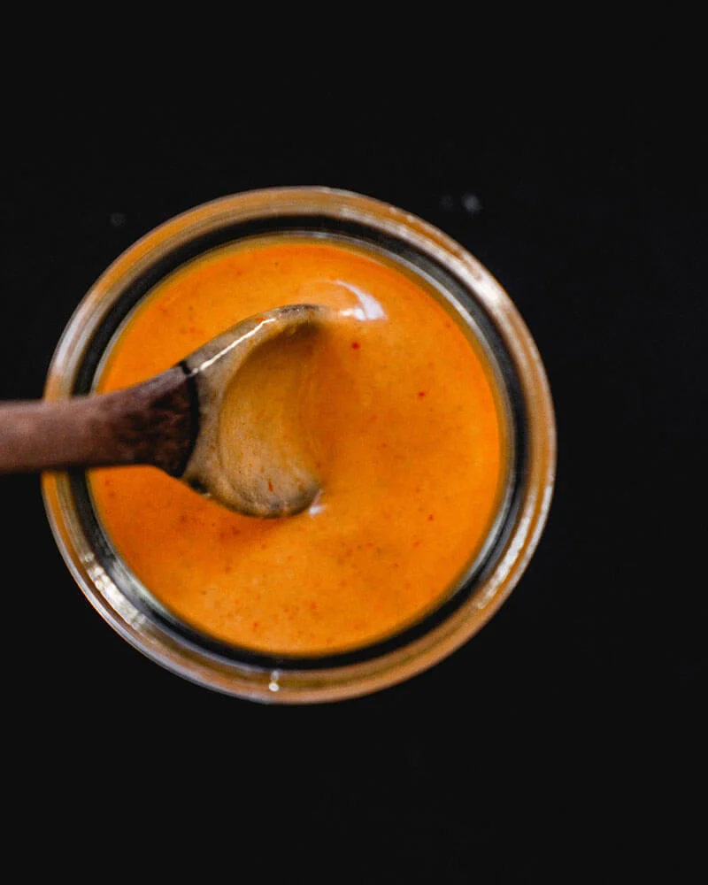

Spicy Chipotle Sauce

Description
The magic ingredient in this chipotle sauce? Tahini. A paste made
of sesame seeds, typically used in Middle Eastern or Mediterranean
dishes, Tahini is perfect for making creamy sauces for salads and
tacos; but, it’s also fantastic for desserts like cookies or as a
replacement for peanut butter for peanut allergies. We use it in
many of our vegan recipes as a creamy alternative to dairy.
In this sauce, we’ve called for only 1 teaspoon of adobo sauce. You
can freeze the remainder of the chipotle chile in adobo sauce for
future use.
Ingredients ready? Simply mix all of the chipotle sauce ingredients
together in a bowl and you’re good to go! Here are a few tips:
- The consistency of tahini brands differs. So, your sauce may
need a little more tahini or a little more water or lemon
juice to get to the right consistency.
- Store refrigerated, then warm to room temp. You’ll need to
store the homemade chipotle sauce in an airtight container
in the fridge. Tahini tends to solidify when chilled. If
it seems a little thick when you take it out of the fridge,
let it sit on the counter for a few minutes before serving.
This chipotle sauce is vegan, vegetarian, gluten-free,
plant-based, dairy-free, and refined sugar free.
OK, now the question: how to serve it? Try with Crispy Cauliflower Tacos!
Ingredients
- 1 lemon or 2 limes, enough for 3 tablespoons juice
- 2 tablespoons tahini
- 2 tablespoons Mexican hot sauce (Cholula)
- 2 tablespoons olive oil
- 1/2 teaspoon cumin
- 1/8 teaspoon kosher salt
- 1 teaspoon adobo sauce (from 1 can of chipotle chiles in adobo sauce)
Steps
- Juice the lemon or limes.
- In a small bowl, mix together all ingredients. Since the consistency
of tahini brands can vary, add a little more tahini if the consistency
of the sauce is too runny, or a little water or extra lemon juice if
the consistency is too thick. Store refrigerated.